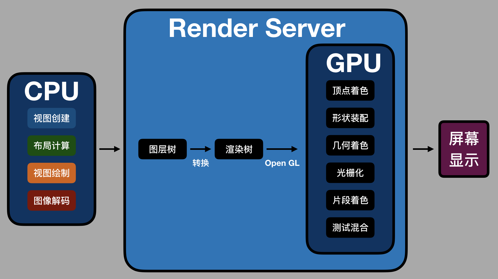

- 00 开篇词 锚定一个点，然后在这个点上深耕.md
- 01 建立你自己的iOS开发知识体系.md
- 02 App 启动速度怎么做优化与监控？.md
- 03 Auto Layout 是怎么进行自动布局的，性能如何？.md
- 04 项目大了人员多了，架构怎么设计更合理？.md
- 05 链接器：符号是怎么绑定到地址上的？.md
- 06 App 如何通过注入动态库的方式实现极速编译调试？.md
- 07 Clang、Infer 和 OCLint ，我们应该使用谁来做静态分析？.md
- 08 如何利用 Clang 为 App 提质？.md
- 09 无侵入的埋点方案如何实现？.md
- 10 包大小：如何从资源和代码层面实现全方位瘦身？.md
- 11 热点问题答疑（一）：基础模块问题答疑.md
- 12 iOS 崩溃千奇百怪，如何全面监控？.md
- 13 如何利用 RunLoop 原理去监控卡顿？.md
- 14 临近 OOM，如何获取详细内存分配信息，分析内存问题？.md
- 15 日志监控：怎样获取 App 中的全量日志？.md
- 16 性能监控：衡量 App 质量的那把尺.md
- 17 远超你想象的多线程的那些坑.md
- 18 怎么减少 App 电量消耗？.md
- 19 热点问题答疑（二）：基础模块问题答疑.md
- 20 iOS开发的最佳学习路径是什么？.md
- 21 除了 Cocoa，iOS还可以用哪些 GUI 框架开发？.md
- 22 细说 iOS 响应式框架变迁，哪些思想可以为我所用？.md
- 23 如何构造酷炫的物理效果和过场动画效果？.md
- 24 A_B 测试：验证决策效果的利器.md
- 25 怎样构建底层的发布和订阅事件总线？.md
- 26 如何提高 JSON 解析的性能？.md
- 27 如何用 Flexbox 思路开发？跟自动布局比，Flexbox 好在哪？.md
- 28 怎么应对各种富文本表现需求？.md
- 29 如何在 iOS 中进行面向测试驱动开发和面向行为驱动开发？.md
- 30 如何制定一套适合自己团队的 iOS 编码规范？.md
- 31 iOS 开发学习资料和书单推荐.md
- 32 热点问题答疑（三）.md
- 33 iOS 系统内核 XNU：App 如何加载？.md
- 34 iOS 黑魔法 Runtime Method Swizzling 背后的原理.md
- 35 libffi：动态调用和定义 C 函数.md
- 36 iOS 是怎么管理内存的？.md
- 37 如何编写 Clang 插件？.md
- 38 热点问题答疑（四）.md
- 39 打通前端与原生的桥梁：JavaScriptCore 能干哪些事情？.md
- 40 React Native、Flutter 等，这些跨端方案怎么选？.md
- 41 原生布局转到前端布局，开发思路有哪些转变？.md
- 42 iOS原生、大前端和Flutter分别是怎么渲染的？.md
- 43 剖析使 App 具有动态化和热更新能力的方案.md
- 用户故事 我是如何学习这个专栏的？.md
- 结束语 慢几步，深几度.md
42 iOS原生、大前端和Flutter分别是怎么渲染的？
你好，我是戴铭。今天，我来和你聊聊iOS原生、大前端和Flutter分别是怎么渲染的。
用户在使用 App 时，界面的设计、流畅程度是最直接的体验。为此，苹果公司提供了各个层级的库，比如 SwiftUI、UIKit、Core Animation、Core Graphic、OpenGL ，以方便App界面的开发。
说起来，即使你不了解这些库的实现原理，也可以通过它们提供的易用接口上手去开发 App，特别是 SwiftUI 大大简化了界面的开发，也确实能够解决大部分问题。但是，一旦遇到性能问题，完全依靠搜索获得的不完整的、拼凑来的知识，大概率只能解一时之需，要想系统地解决问题，还是要知道这些库的实现原理。
而这些与界面相关的库，背后的知识其实就是渲染。接下来，我就和你说说渲染的原理。
渲染原理
我们看到的 App 界面，都是由 CPU 和 GPU 共同计算处理的。
CPU 内部流水线结构拥有并行计算能力，一般用于显示内容的计算。而 GPU的并行计算能力更强，能够通过计算将图形结果显示在屏幕像素中。内存中的图形数据，经过转换显示到屏幕上的这个过程，就是渲染。而负责执行这个过程的，就是GPU。
渲染的过程中，GPU需要处理屏幕上的每一个像素点，并保证这些像素点的更新是流畅的，这就对 GPU 的并行计算能力要求非常高。
早期，图形渲染是由 VGA（Video Graphics Array，视频图形阵列）来完成的，随着3D加速的需要，带来了比如三角形生成、光栅化、纹理贴图等技术。处理这一系列技术的处理器，就被统称为 GPU。
GPU的主要工作是将 3D 坐标转化成 2D 坐标，然后再把2D 坐标转成实际像素，具体实现可以分为顶点着色器（确定形状的点）、形状装配（确定形状的线）、几何着色器（确定三角形个数）、光栅化（确定屏幕像素点）、片段着色器（对像素点着色）、测试与混合（检查深度和透明度进行混合）六个阶段。
为了能够更方便地控制 GPU 的运算，GPU 的可编程能力也不断加强，开始支持 C 和 C++ 语言。通过 OpenGL 标准定义的库，可以更容易地操作 GPU。
在渲染过程中，CPU 专门用来处理渲染内容的计算，比如视图创建、布局、图片解码等，内容计算完成后，再传输给 GPU 进行渲染。
在这个过程中，CPU 和 GPU 的相互结合，能够充分利用手机硬件来提升用户使用 App 的体验。当然，在这个过程中，如果CPU 的计算时间超过了屏幕刷新频率要求的时间，界面操作就会变得不流畅。
那么，如果你想要知道原生、大前端和 Flutter 谁会更流畅，就要分别去了解在渲染过程中，谁的CPU 计算内容会更快。
接下来，我们先看看原生渲染中的计算。
原生渲染
原生界面更新渲染的流程，可以分为以下四步。
第一步，更新视图树，同步更新图层树。
第二步，CPU 计算要显示的内容，包括视图创建（设置 Layer 的属性）、布局计算、视图绘制（创建 Layer 的 Backing Image）、图像解码转换。当 runloop 在 BeforeWaiting 和 Exit 时，会通知注册的监听，然后对图层打包，打完包后，将打包数据发送给一个独立负责渲染的进程 Render Server。
第三步，数据到达 Render Server后会被反序列化，得到图层树，按照图层树中图层顺序、RGBA值、图层 frame 过滤图层中被遮挡的部分，过滤后将图层树转成渲染树，渲染树的信息会转给 OpenGL ES/Metal。前面 CPU 所处理的这些事情统称为 Commit Transaction。
第四步，Render Server 会调用 GPU，GPU 开始进行前面提到的顶点着色器、形状装配、几何着色器、光栅化、片段着色器、测试与混合六个阶段。完成这六个阶段的工作后，再将 CPU 和 GPU 计算后的数据显示在屏幕的每个像素点上。
整个渲染过程，如下图所示：

如上图所示，CPU 处理完渲染内容会输入到 Render Server 中，经图层树和渲染树的转换，通过 OpenGL 接口提供给 GPU，GPU 处理完后在屏幕上显示。
渲染过程中 Commit Trasaction 的布局计算会重载视图 LayoutSubviews 方法，以及执行 addSubview 方法来添加视图。视图绘制会重载视图的 drawRect 方法。这几个方法都是 iOS 开发中常用的。
移动视图位置、删除视图、隐藏或显示视图、调用 setNeedsDisplay 或 setNeedsDisplayInRect 方法，都会触发界面更新，执行渲染流程。
这些就是原生渲染计算的所有内容了，接下来我们再一起看看大前端的渲染。
大前端渲染
大前端的开发框架主要分为两类：第一类是基于 WebView 的，第二类是类似 React Native 的。
对于第一类 WebView 的大前端渲染，主要工作在 WebKit 中完成。WebKit 的渲染层来自以前 macOS 的 Layer Rendering 架构，而iOS 也是基于这一套架构。所以，从本质上来看，WebKit 和 iOS 原生渲染差别不大。
第二类的类React Native 更简单，渲染直接走的是iOS 原生的渲染。那么，我们为什么会感觉 WebView 和类React Native 比原生渲染得慢呢？
从第一次内容加载来看，即使是本地加载，大前端也要比原生多出脚本代码解析的工作。
WebView需要额外解析 HTML + CSS + JavaScript 代码，而类 React Native方案则需要解析JSON + JavaScript。HTML + CSS 的复杂度要高于 JSON，所以解析起来会比 JSON 慢。也就是说，首次内容加载时， WebView 会比类React Native 慢。
从语言本身的解释执行性能来看，大前端加载后的界面更新会通过 JavaScript 解释执行，而JavaScript 解释执行性能要比原生差，特别是解释执行复杂逻辑或大量计算时。所以，大前端的运算速度，要比原生慢不少。
除了首次加载解析要耗时，以及 JavaScript 语言本身解释慢导致的性能问题外，WebView 的渲染进程是单独的，每帧的更新都要通过 IPC 调用 GPU 进程。频繁的IPC 进程通信也会有性能损耗。
WebView的单独渲染进程还无法访问 GPU 的 context，这样两个进程就没有办法共享纹理资源。纹理资源无法直接使用 GPU 的 Context 光栅化，那就只能通过 IPC 传给 GPU 进程，这也就导致 GPU 无法发挥自身的性能优势。由于 WebView 的光栅化无法及时同步到 GPU，滑动时容易出现白屏，就很难避免了。
说完了大前端的渲染，你会发现，相对于原生渲染，无论是 WebView 还是类 React Native都会因为脚本语言本身的性能问题而在存在性能差距。那么，对于 Flutter 这种没有使用脚本语言，并且渲染引擎也是全新的框架，其渲染方式有什么不同，性能又怎样呢？
Flutter 渲染
Flutter 界面是由 Widget 组成的，所有 Widget 组成 Widget Tree，界面更新时会更新 Widget Tree，然后再更新 Element Tree，最后更新 RenderObject Tree。
接下来的渲染流程，Flutter 渲染在 Framework 层会有 Build、Wiget Tree、Element Tree、RenderObject Tree、Layout、Paint、Composited Layer 等几个阶段。将 Layer 进行组合，生成纹理，使用 OpenGL 的接口向 GPU 提交渲染内容进行光栅化与合成，是在 Flutter 的 C++ 层，使用的是 Skia 库。包括提交到 GPU 进程后，合成计算，显示屏幕的过程和 iOS 原生基本是类似的，因此性能也差不多。
Flutter 的主要优势，在于它能够同时运行于 Android 和 iOS这两个平台。但是，苹果公司在WWDC 2019 上推出 SwiftUI 和 Preview 后，Flutter 在界面编写和 Hot Reload 上的优势会逐渐降低。
小结
今天这篇文章，我首先和你说了渲染的原理，然后分别和你展开了原生、大前端、Flutter 是怎么渲染的。整体来看，大前端中的 WebView 方式渲染性能会差些，React Native 和其他方案在渲染上的性能都差不多。
而关于如何选择这三种开发方案，我的建议是结合自身情况和工作需要来确定就好。
当你所在团队已经偏向于大前端时，那么你可以选择拥抱变化，毕竟前端技术生态已经非常完善了。
如果你开始喜欢谷歌的技术，也想多了解 Android 或者谷歌的新操作系统 Fuchsia的话，Flutter 无疑是最好的选择。
当然，如果你和我一样是一名果粉的话，那我相信苹果公司的产品会不断给你惊喜，可以继续你的iOS 原生开发之旅。相信在 SwiftUI、Project Catalyst、Combine 这些项目的帮助下，你一定能够开发出更多、更优秀的 App 。
课后作业
在你看来，Chrome 和 WebKit 的渲染引擎，有什么区别呢？
感谢你的收听，欢迎你在评论区给我留言分享你的观点，也欢迎把它分享给更多的朋友一起阅读。
© 2019 - 2023 Liangliang Lee. Powered by gin and hexo-theme-book.